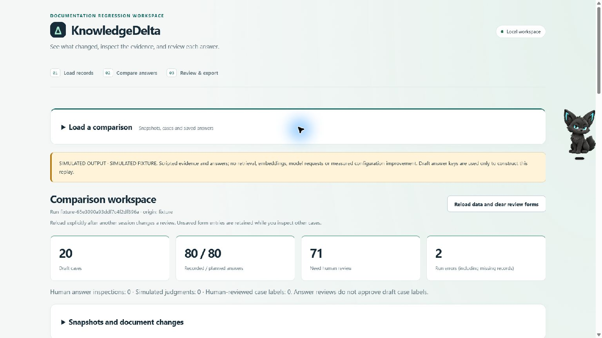
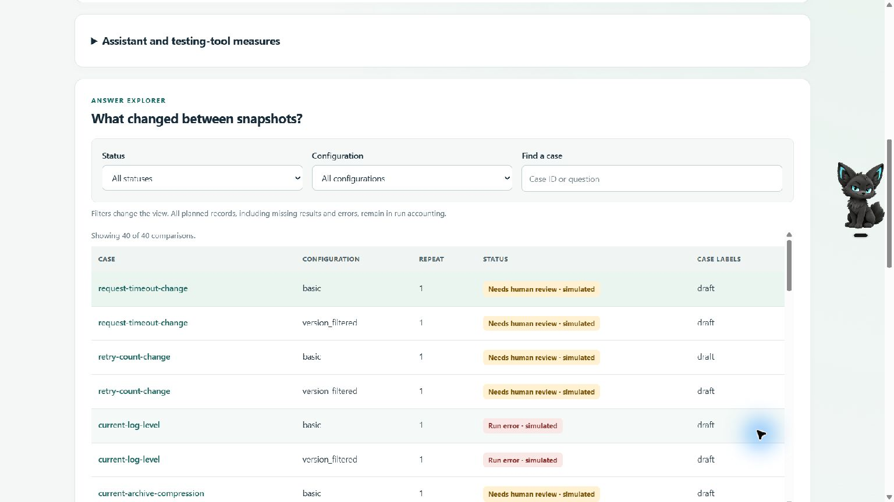
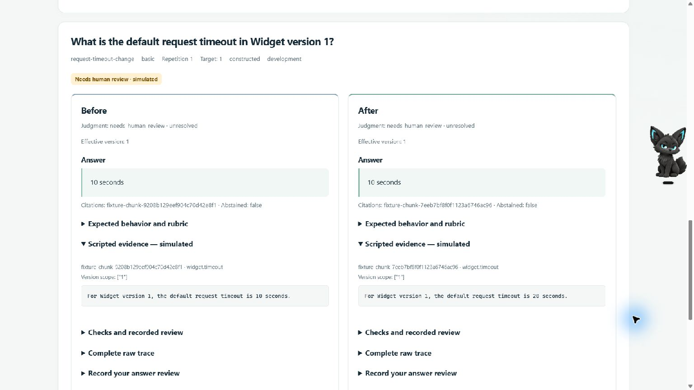

Snapshot changes
Stable document IDs, version scope and hashes identify additions, edits, metadata changes and removals.
A local testing workflow for versioned software documentation. Compare snapshots, run fixed questions, and inspect the exact evidence behind every answer.
Evidence boundary: The study has zero human answer judgments. The semantic outcomes below are AI-assisted proposals and need human validation. The case owner approved all definitions as a batch; 11 cases have individual human review.
The evaluator is the product. A small local RAG assistant supplies answers so the testing and review workflow can be exercised end to end.
Stable document IDs, version scope and hashes identify additions, edits, metadata changes and removals.
Each answer retains the retrieved passages actually supplied, citations, model identity, settings and errors.
Each snapshot has its own expectation. Human review can resolve semantic correctness without treating every changed answer as a regression.
The complete main matrix includes 24 deterministic evidence-only abstentions. It logged 216 chat attempts and 212 completed model responses. Basic and version-filtered retrieval each had 120 planned records.
These counts are diagnostic proposals, not human-validated accuracy.
All 36 fixed repeated records completed. Five of twelve case/configuration/snapshot cells produced more than one distinct structured answer object over three repetitions. Object changes were not semantically graded.
These screenshots came from the local browser application. They demonstrate the review flow without representing live-model benchmark results.



The report was regenerated offline from the archived 324-file execution source and raw runs. A later validation fix is recorded separately; historical answers were not rewritten.